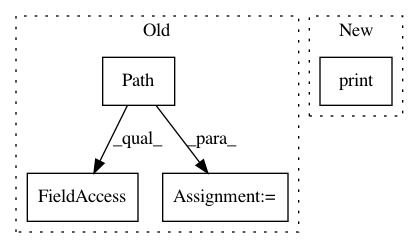

c3a047559b516fae6a7f26535b1131d991ab2398,scripts/convert.py,ConvertImage,check_skipface,#ConvertImage#Any#Any#,200
Before Change
aligned_face_name = "{}_{}{}".format(Path(filename).stem, face_idx, Path(filename).suffix)
aligned_face_file = Path(self.arguments.input_aligned_dir) / Path(aligned_face_name)
// TODO: Remove this temporary fix for backwards compatibility of filenames
bk_compat_aligned_face_name = "{}{}{}".format(Path(filename).stem, face_idx, Path(filename).suffix)
bk_compat_aligned_face_file = Path(self.arguments.input_aligned_dir) / Path(bk_compat_aligned_face_name)
return aligned_face_file not in self.input_aligned_dir and bk_compat_aligned_face_file not in self.input_aligned_dir
def convert(self, converter, item):
After Change
face_file = Path(self.args.input_aligned_dir) / Path(face_name)
skip_face = face_file not in self.faces_to_swap
if skip_face:
print("face {} for frame {} was deleted, skipping".format(
face_idx, os.path.basename(filename)))
return skip_face
In pattern: SUPERPATTERN
Frequency: 3
Non-data size: 4
Instances
Project Name: deepfakes/faceswap
Commit Name: c3a047559b516fae6a7f26535b1131d991ab2398
Time: 2018-04-23
Author: 36920800+torzdf@users.noreply.github.com
File Name: scripts/convert.py
Class Name: ConvertImage
Method Name: check_skipface
Project Name: ultralytics/yolov3
Commit Name: 0bc1db58d82c2482bfac1e32a3a43cfd5a533da2
Time: 2021-01-10
Author: glenn.jocher@ultralytics.com
File Name: utils/google_utils.py
Class Name:
Method Name: attempt_download
Project Name: AlexEMG/DeepLabCut
Commit Name: 812f374c34087af0aa90ac3cd2b37158b1ad0372
Time: 2019-07-02
Author: amathis@fas.harvard.edu
File Name: deeplabcut/post_processing/analyze_skeleton.py
Class Name:
Method Name: analyzeskeleton